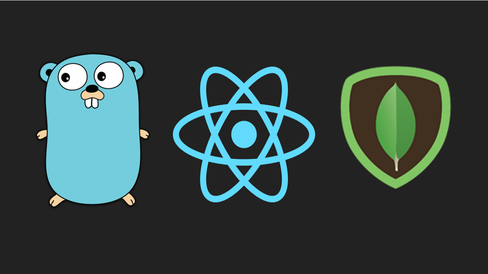

The main purpose of this tutorial to get hands-on experience in Golang. When I was learning Golang, I realized there are very few tutorials and articles out there which give you a complete end to end hands-on experience.
This is the GitHub link for the complete code.
In this tutorial, we will build a todo app in which the server will be in Golang, the database will be MongoDB, and the frontend will be in React.
- Server — Go
- Database — MongoDB
- Frontend — React
I am assuming that you have Go installed and have a basic understanding of it. If you don’t, I’ll explain all the steps and will mention the references of the related topics.
Note: This project is developed outside the GOPATH due to which the local imports are working.
Create a project directory and give it an appropriate name.
I am using go-todo .
Let’s first create the server.
Server in Golang
Create a server directory inside the go-todo .
The server directory structure will be:
go-todo
- server
- middleware
- middleware.go
- models
- models.go
- router
- router.go
- main.go
In the server, we require 2 dependencies: the first to connect with MongoDB and the second to create RESTAPIs.
We are going to use the official MongoDB Go Driver from MongoDB.
To install it run the below command in the terminal or command window.
go get go.mongodb.org/mongo-driver
Second, install the gorilla/mux package for the router. mux is one of the most popular packages for the router in the Golang.
To install it run the below command in the terminal or command window.
go get -u github.com/gorilla/mux
Models
Once both the packages installed successfully, create a models directory and models.go file inside it and paste the below code.
package models
import "go.mongodb.org/mongo-driver/bson/primitive"
type ToDoList struct {
ID primitive.ObjectID `json:"_id,omitempty" bson:"_id,omitempty"`
Task string `json:"task,omitempty"`
Status bool `json:"status,omitempty"`
}
The first line is the package name for this file. To learn more about packages follow this link.
The second line is import primitive from mongo-driver the package.
To define how the data will get stored in the database we have to create a modelfor it. In Golang, we use struct type for this.
In the ToDoList we have 3 fields:
- ID: This objectID will be generated by the MongoDB
- Task: The test
- Status:
trueorfalse
The type of id in MongoDB is Object(id) .
Note: ToDoList must be in uppercase as it is exported.
Middleware
Create a new folder by name middleware in the server directory and create a new file middleware.go inside it and paste the below code in it.
middleware.go
MongoDB Set up
First set up the MongoDB connection.
Here I am using MongoDB Atlas for the demo. You can sign up for free tier, it gives you 512MB of storage, that is more than enough for learning purpose.
Sign up for MongoDB Atlas. Follow the link instructions.
Once you have your cluster ready, a few things need to be done.
First, white list your IP address.
- Click on “Network Access” under “Security”.
- Click “ADD IP ADDRESS” and select “ADD CURRENT IP ADDRESS”. This will allow only your computer to interact with it.

Second, create a user. You can learn more about the user in this link.
- Click “Database Access” under “Security” and create a new user.
- I have
adminas a user.

Now, its time to get the connection string.
- Go to “Cluster” and click “connect” and then “Connect Your Application”.
- Copy the connection string and paste it in
connectionStringinmiddleware.go

Let me explain the functionality. All the functions which are in uppercase are exported and will be used in router.go which we will be writing in some time.
**init()****:** runs only once throughout the program life. In the init function the connection to the MongoDB will be established. Check out this answer on StackOverflow to learn more about init.**GetAllTask****:** First it set the header to tackle the cors issue and then it will call thegetAllTask()function. It uses absonpackage to get the data from the MongoDB._bson.M__is used where M is an unordered, concise representation of a BSON document. It should generally be used to Serialize BSON._ All the documents returned inprimitive.Mtype. Packageprimitivecontains types similar to Go primitives for BSON types can do not have direct Go primitive representations.**CreateTask****:** It first decodes the request body and store inmodels.ToDoListtype. It is imported from amodelspackage. Then, it will callinsertOneTaskfunction and insert the task into the collection.**TaskComplete****:** It is an update request where it will update the task’s status according to task ID. To get theparamsfrom the URL, we are usingmuxpackage. Usingmux, send task id as a string to thetaskCompletefunction. MongoDB assigns ids to the data in ObjectID format. To get the ObjectID from the task id (string), we are usingprimitivepackage’s methodObjectIDFromHex. It will return theObjectID. TheupdateOnemethod requires 3 argumentscontext,filterandupdate.contextisBackgroundyou can learn more about context package from this link. The second argument isfilter, filter by id and the third one isupdatewhere status is updated totrue.**UndoTask****:** This is same as TaskComplete, it only updates the task’s status tofalse**DeleteTask****:** It is a delete request. First, it’ll get the task id from the URL and then pass it to thedeleteOneTask. It will retrieve theObjectIDof the task and then it will delete the task by its id from the collection.**DeleteAllTask****:** As its names speak for itself, it deletes all the tasks from the collection.
The middleware is complete.
Router
Create a router folder in the server directory and then create a new file router.go in it. Paste the below code in the file.
router
First, we’re importing all task functions from the middleware package.
Second, we’re using mux package to create routes.
- Line 11: create a new instance of the router using
mux.NewRouter() - Line 13:
GETmethod to get all task from the DB. InMethodsthe first parameter isMethodin this case, it isGETand secondOPTIONS, this is to tacklecors. - Line 14:
POSTmethod to create a task in the DB. - Line 15:
PUTmethod to update the task’s status totruein the DB. The task’s id is passed as params in the URL. - Line 16:
PUTmethod to update the task’s status tofalsein the DB. The task’s id is passed as params in the URL. - Line 17:
DELETEmethod to delete the task from the DB. The task’s id is passed as params in the URL. - Line 18:
DELETEmethod to delete all the tasks from the DB. - Line 19: Return the
routerinstance. This router will be served in themain.go
main.go
Create a main.go file in the server directory. Paste the below code in it.
package main
import (
"fmt"
"log"
"net/http"
"./router"
)
func main() {
r := router.Router()
fmt.Println("Starting server on the port 8080...")
log.Fatal(http.ListenAndServe(":8080", r))
}
Import net/http package to serve the routes at 8080 port and ./routerto import router package.
Create an instance of router package.
r := router.Router()
Serve/host the application on the 8080 port.
http.ListenAndServe(":8080", r)
Alog package is used to track logs.
Open the terminal from the server directory and run the below command to serve the server. You’ll see the output as the image.
go run main.go

You can test the APIs using POSTMAN .
Frontend in React
We’re using the create-react-app module as a boilerplate for this project. You can learn more about it here.
Run the below command from the project directory go-todo
npx create-react-app client
It will take a while to install. Once it is finished, install the following dependencies for the project. Open terminal from the client directory.
- Axios: For interacting with the server rest APIs.
- semantic-ui-react: It is a great react component library to quickly build a frontend. Refer to this link to learn more it.
npm install axios
npm install semantic-ui-react
Semantic UI React provides React components while Semantic UI provides themes as CSS stylesheets. Add the stylesheet in index.html inside the public folder. Check the semantic UI version from this link.
<link rel="stylesheet" href="//cdn.jsdelivr.net/npm/semantic-ui@2.4.2/dist/semantic.min.css"/>
Update the title in the title tag. This will be the title of the tab in the browser. Save the index.html
<title>ToDo App</title>
Go to the src folder and open App.js . Delete the content in it and paste the below code.
import React from "react";
import "./App.css";
// import the Container Component from the semantic-ui-react
import { Container } from "semantic-ui-react";
// import the ToDoList component
import ToDoList from "./To-Do-List";
function App() {
return (
<div>
<Container>
<ToDoList />
</Container>
</div>
);
}
export default App;
Create a new file To-Do-List.js inside the src folder. This component will be the frontend.
You can download the component from the GitHub.
You can save the file and it is ready to go.
Run the Application
- Open the terminal and start the
serverfrom the server directory.
go run main.go
- Open the terminal and start the react application from the client directory.
npm start
- Go to
http://localhost:3000

- Create tasks

- Complete task by clicking
Done

- Undo a task

- Delete Task

Congratulations! You just build a To-Do App in Golang.
For the complete code. This is the Github Link.